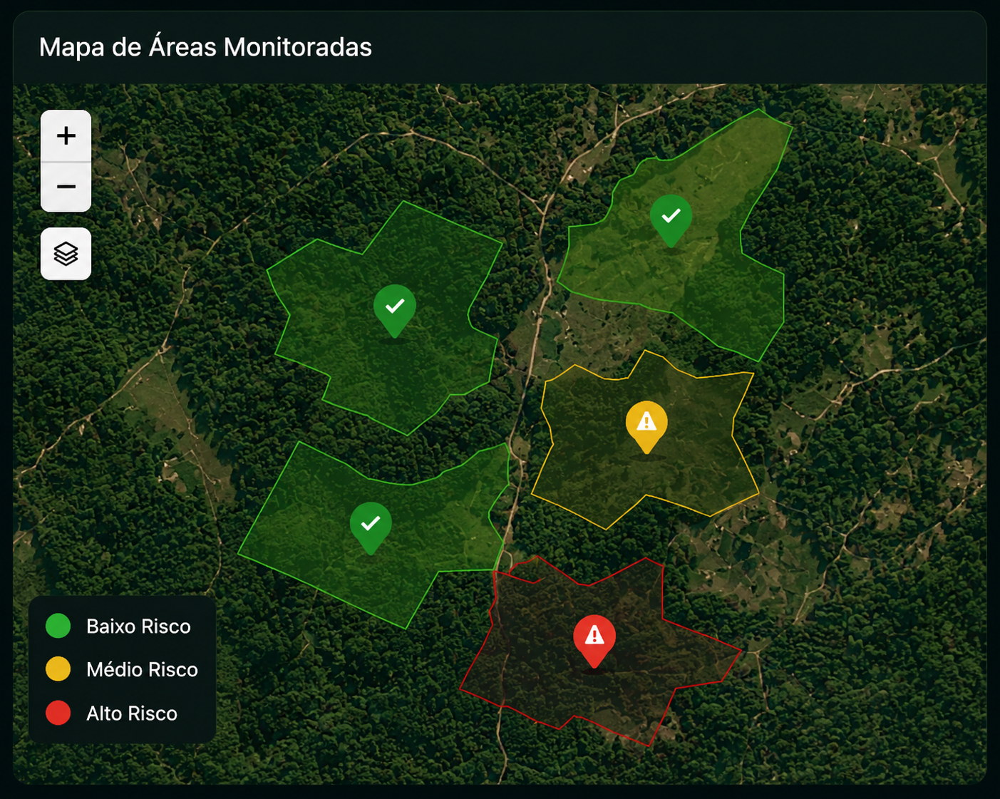
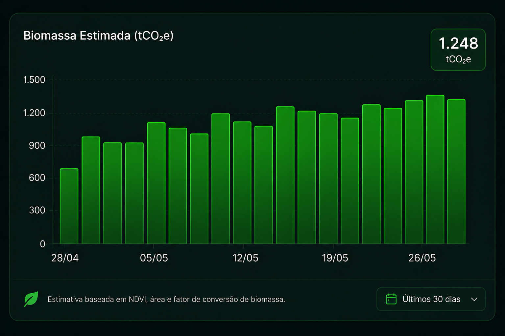
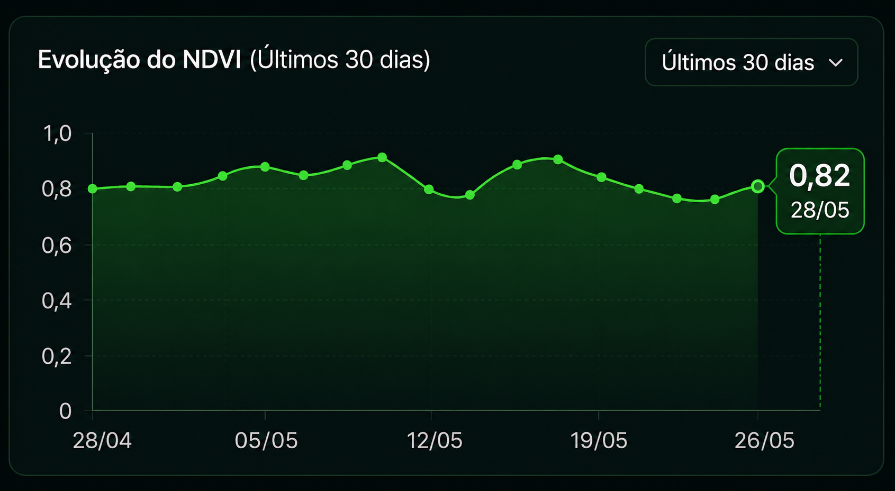

Auditorias Caras
Auditorias ambientais tradicionais exigem equipes especializadas e visitas presenciais frequentes.
Pequenos produtores enfrentam dificuldades para participar do mercado devido ao alto custo das auditorias ambientais tradicionais. A falta de monitoramento contínuo aumenta riscos de fraude, degradação ambiental e perda de confiança nos créditos de carbono.
Auditorias ambientais tradicionais exigem equipes especializadas e visitas presenciais frequentes.
Falta de monitoramento contínuo aumenta o risco de fraudes e créditos de carbono inválidos.
Problemas ambientais podem levar meses para serem identificados entre auditorias.
Monitoramento orbital da vegetação.
Análise da saúde da cobertura vegetal.
Processamento de biomassa e CO₂ a partir de APIs espaciais.
Monitoramento local com arduino e sistemas embarcados
Reduzir dependência de inspeções presenciais.
Tornar o mercado acessível para pequenos produtores.
Monitoramento contínuo e transparente.
Redução potencial nos custos de auditoria
Monitoramento contínuo
Rastreabilidade dos dados ambientais
Aplicável em qualquer região monitorada



A solução automatiza o monitoramento ambiental, transformando dados de satélite em informações acessíveis para produtores e investidores. Com dados orbitais e sensores locais, usuários identificam riscos, acompanham indicadores e validam créditos de carbono.
Pergunta 1 de 10